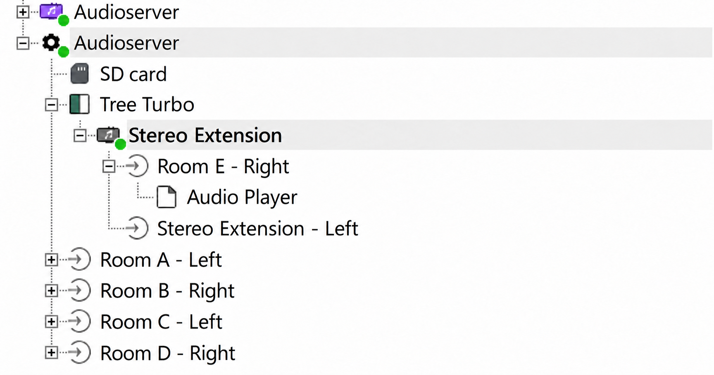
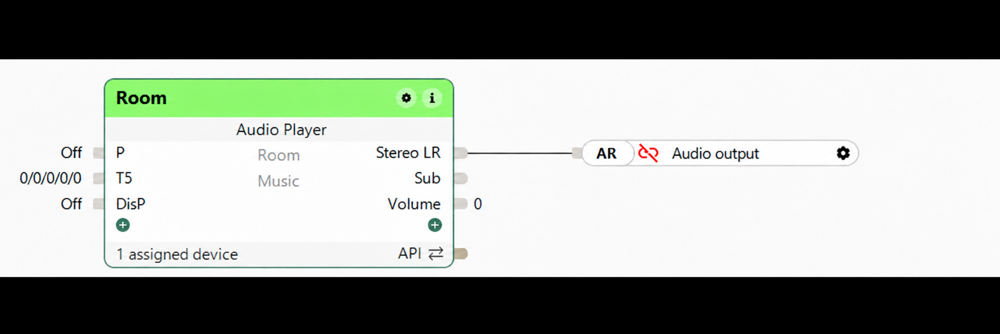

Practical guide: your first room with AudioDek
For a fresh installation of LoxBerry 4.0 on x86_64. Follow the steps in order and start with one room. AudioDek helps you assign players and recover configuration changes. Sonn handles playback; everyday control remains in the Loxone app.
1. Prepare what you need
- LoxBerry 4.0 on an x86_64 PC or virtual machine. This AudioDek package does not target LoxBerry on ARM.
- An accessible Miniserver and its Loxone Config project, with permission to deploy changes.
- Audioserver4Home running Sonn 4.0.0-beta.19, the version examined for this edition. Compatibility with other versions needs verification.
- For your first room: a Raspberry Pi supported by piCorePlayer, a microSD card, power supply, network connection and suitable audio output (such as a USB DAC), plus an amplifier and speakers as required.
- Devices that can communicate on your local network. Start with wired Ethernet.
Record three separate IP addresses: LoxBerry/Sonn, the Miniserver and the player. Each device needs its own address. Your router's device list can help; a DHCP reservation helps keep addresses consistent.
AudioDek does not install Sonn, write piCorePlayer SD cards or create Loxone Config blocks. This guide explains the steps in each application.
2. Prepare Sonn and install AudioDek
- Install Audioserver4Home through LoxBerry's plugin management, following its documentation. Check that Sonn is running and verify its version. Do not change a working system's version without checking compatibility.
- Open Sonn administration from Audioserver4Home or visit
http://LOXBERRY_IP:7090, replacing the placeholder with your actual address. - Complete initial setup and create an administrator account if prompted. Keep its credentials.
- Install the AudioDek ZIP through LoxBerry Plugins and open its dashboard.
- Click Refresh / Rediscover. Guided diagnostics should report a readable configuration and a running Sonn service. No rooms is normal before you have configured any zones.
Before continuing: you should be able to open both Sonn and AudioDek. Resolve missing configuration or a stopped service in Audioserver4Home first.
Documentation: Audioserver4Home and Sonn initial setup.
3. Create your first room in Loxone Config
- Save a copy of your Loxone Config project before editing it.
- In Sonn, open Zones and select Loxone integrated. Note the host and serial number provided by Sonn.
- Add the Audioserver in Loxone Config using those details. Use the Sonn server's address and the serial number shown by Sonn.
- Create an Audio Player function block. Give it a clear name, such as Kitchen, assign its room and connect it to an available Audioserver output.
- Deploy the configuration to the Miniserver. If initial pairing requires a Miniserver reboot, follow Sonn's instructions and choose a time when interrupting operation is acceptable.
- Return to AudioDek and click Refresh / Rediscover. Your room should appear, possibly without a player assigned yet.
Do not copy another installation's serial number or duplicate an Audioserver identity to obtain extra outputs. Check Sonn's output and extension support when expanding. AudioDek does not invent zone IDs or modify your Loxone project.
AudioDek's Local Miniserver reference fields are notes only. Saving them does not connect Sonn to the Miniserver.
References: Sonn's Loxone integration and pairing troubleshooting. Menu names may vary with version and language.
How the Audioserver and rooms are arranged

Rooms A to D use direct Audioserver outputs. Room E appears under Tree Turbo → Stereo Extension → right output → Audio Player. Left and Right are Loxone channels, not a Raspberry Pi's IP address or MAC. The other Audioserver shown belongs to the example and is not required to get started.
The extension in this example is used with Sonn's emulation. You do not need an extension for your first room if an output is available. Check your Sonn version's support and identity requirements before expanding.
Connecting the Audio Player block

After deploying to the Miniserver, check pairing in Loxone and confirm the zone appears in AudioDek. Loxone Config defines the block and output; Sonn receives the zone; AudioDek associates it with a Squeezelite player. The player's IP and playerId are separate from the Audioserver or extension serial number.
4. Prepare piCorePlayer
- Download piCorePlayer from its official website and write its image to a microSD card following its guide. Carefully select the correct target card.
- Insert the card into the Raspberry Pi and connect Ethernet, the audio equipment and power.
- Find its IP address in your router or on the boot screen, then visit
http://PLAYER_IP. - Complete initial setup. In Squeezelite Settings, select the audio output you actually use and a recognizable player name. Save and restart Squeezelite or the device when requested.
- Configure Squeezelite to connect to the Sonn/LoxBerry IP address. piCorePlayer may label this field server or LMS. Sonn acts as the Squeezelite server here: do not use the Miniserver's IP or the player's own IP. A separate LMS installation is not required for this setup.
- Check that Squeezelite is running, then refresh AudioDek.
The player IP address identifies the Raspberry Pi. The playerId identifies its Squeezelite instance and commonly looks like a MAC address. Do not use an Audioserver or Stereo Extension serial number. Selecting a detected player lets AudioDek retrieve its details from Sonn.
See piCorePlayer getting started. Its examples use LMS; for this installation, connect the Squeezelite client to Sonn.
5. Select and assign the player
- Check Players detected by Sonn. If access is required, expand Sonn access, enter a Sonn administrator account and click Connect to query players. AudioDek stores the session, not the password.
- Check the player's name, IP and connection status. This is Sonn's client list, not a scan of every network device.
- Under Manage a room's player, select the room and Assign / replace player.
- Select a connected, available device under Detected player. Leave manual fields empty; AudioDek obtains the details from Sonn.
- Click Review player change and verify the room, name, IP and playerId.
- Type ASSIGN and click Confirm change. AudioDek creates a backup and restarts Sonn. Playback is interrupted during this operation.
- Check the operation result and refresh the dashboard.
Manual alternative: select Enter details manually and provide the actual name, IPv4 address and playerId. Every player needs a unique identity; AudioDek rejects duplicates. To detach a player, select the room and Remove player, review, then confirm with REMOVE.
No player yet? Leave the room pending. Do not enter an invented IP or MAC address.
6. Check playback and add more rooms
- Prepare a playable source in Sonn, such as a radio station or music library.
- Open the Loxone app, select the room and play the source at a moderate volume.
- Check sound, pause and volume at the speakers. An active Soloist process or connected player does not by itself prove that the audio output and amplifier work.
- Once it works, repeat steps 3 to 6 for another room with its own player.
Expected result: the room exists in Loxone, AudioDek shows its Squeezelite output, Sonn reports a connected player and you hear music in the room.
7. Save a backup and understand its scope
Under Transactional backup, select the room and click Create room backup. Check Backup history and use Verify / Preview restore to inspect the backup without restoring it.
A backup contains the configuration of all zones, but Soloist data for only the selected room. It is not a full backup of all audio data or the Miniserver project. Keep a separate Loxone Config project copy and a system backup using LoxBerry's facilities.
A real restore requires typing RESTORE and confirming. Sonn restarts. The complete configuration is restored to the backup's state, potentially reverting later changes in other rooms. Do not restore just to test the display.
Troubleshooting
| What you see | What to check |
|---|---|
| No rooms | Loxone integration enabled in Sonn, correct Audioserver identity, Audio Player linked to an output and project deployed to the Miniserver. Then refresh AudioDek. |
| Sonn access required or expired | Connect through Sonn access using a valid Sonn administrator account. Local Miniserver reference notes do not establish this session. |
| Player not detected | Power, network, Squeezelite running and connected to this Sonn server. If it uses another server, correct the client's server setting. |
| Player already assigned | Check which room uses it. Do not duplicate IP addresses or playerIds to bypass validation. |
| Soloist active but no sound | Player connection, playable source, piCorePlayer audio output, DAC, cables, amplifier, speakers and volume. |
| No permission to apply changes | Ask your LoxBerry administrator to check installation and directory permissions. Do not grant unrestricted permissions or edit unrelated files. |
| Cannot query Sonn on port 7090 | Sonn running and administration accessible. This edition queries Sonn on the same LoxBerry at local port 7090; a different server or port requires adapting the plugin. |
This guide accompanies AudioDek v1.0.7, English edition. Reading and refreshing do not apply audio changes. Assigning, removing and restoring do. Authenticated discovery and a complete fresh installation still require real-system validation.